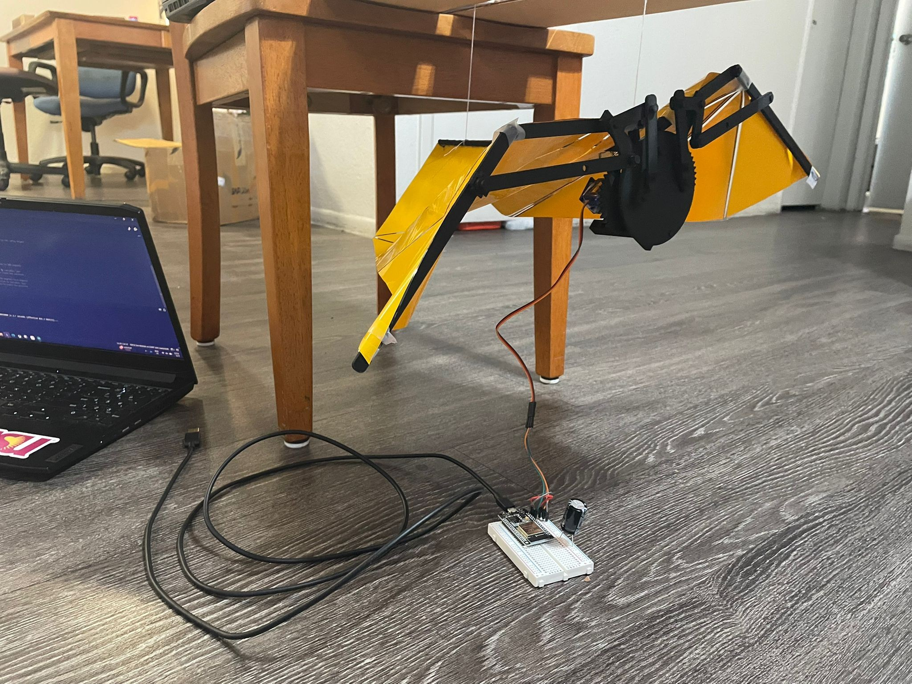

Mechanical Flying Bat
Bio-Inspired Flight Mechanism
Adaptive Locomotion with Electronic Actuation

Project Overview
Designed and built a folding, bio-inspired flying mechanism based on bat and insect gait principles. The project combined mechanical design, electronic actuation, and sensor-based control to achieve adaptive flight behavior.
Design Objectives
- Create biomimetic wing structure with folding capability
- Integrate electronic actuation for wing motion
- Implement dynamic gait pattern modification
- Achieve controlled flight with sensor feedback
- Optimize for lightweight and durable construction
Mechanical Design
Wing Structure
- Frame: Carbon fiber rods for lightweight strength
- Membrane: Ultra-thin fabric stretched across frame
- Joints: Custom 3D-printed hinges for folding motion
- Actuation Points: Servo-driven linkages at wing roots
Folding Mechanism
The wings could fold and unfold during flight, mimicking bat wing morphology:
- Extended position for maximum lift during downstroke
- Folded position to reduce drag during upstroke
- Continuous adjustment based on flight phase
Electronic System
Actuation
- Servos: 4× micro servos (2 per wing) for flapping and folding
- Microcontroller: Arduino Nano for real-time control
- Power: Lightweight Li-Po battery (150mAh)
- Driver Circuit: Custom PCB with servo control and power regulation
Sensor Integration
- Accelerometer: 3-axis IMU for orientation sensing
- Ultrasonic: Distance sensor for altitude estimation
- Encoders: Wing position feedback from servo potentiometers
Control System
Gait Pattern Generation
Implemented multiple flapping patterns inspired by natural flight:
- Hovering Mode: Symmetrical rapid flapping (15 Hz)
- Forward Flight: Asymmetric stroke with forward bias
- Climbing: Increased amplitude and frequency
- Gliding: Extended wings, minimal flapping
Adaptive Control
Gait parameters adjusted dynamically based on sensor feedback:
- Altitude control via flapping frequency modulation
- Orientation correction using differential wing stroke
- Energy conservation by switching to glide mode when possible
Challenges & Solutions
Challenge: Weight vs. Strength Trade-off
Solution: Used carbon fiber frame with fabric membrane. Minimized electronics weight by using micro components and custom PCB.
Challenge: Complex Wing Kinematics
Solution: Simplified to 2-DOF per wing (flapping + folding). Used linkage mechanism to coordinate motion mechanically rather than electronically.
Challenge: Battery Life
Solution: Implemented power-saving modes. Used efficient servos. Added automatic landing when battery voltage dropped below threshold.
Results
- Achieved sustained flight for 45 seconds
- Demonstrated controlled altitude changes
- Successfully transitioned between flight modes
- Total weight: 28 grams
- Wing span: 35 cm
Tools & Technologies
Mechanical: Fusion 360, 3D Printing, Carbon Fiber, Fabric Membrane
Electronics: Arduino Nano, Micro Servos, IMU, Li-Po Battery, Custom PCB
Software: Embedded C/C++, PID Control, State Machine, Sensor Fusion
Key Learnings
This project taught the importance of biomimicry in engineering design, the challenges of weight optimization in flying systems, and the integration of mechanical and electronic systems for adaptive behavior.